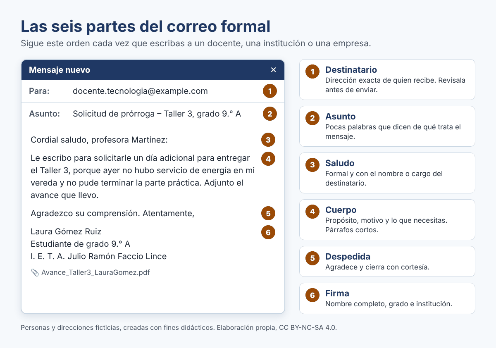

Las seis partes del correo formal

Expresiones útiles
| Parte | Expresiones adecuadas | Evita |
|---|---|---|
| Asunto | «Entrega del Taller 3 – Grado 9.° A»; «Solicitud de permiso – 15 de mayo» | Dejarlo vacío; «hola»; «urgente!!!» |
| Saludo | «Cordial saludo, profesora Martínez:»; «Buenos días, señor rector:» | «Hola profe»; «Qué más» |
| Cuerpo | «Le escribo para…»; «Le solicito…»; «Adjunto…» | Abreviaturas (xq, tmb, q); mayúsculas sostenidas |
| Despedida | «Agradezco su atención.»; «Quedo atento a su respuesta.»; «Atentamente,» | «Chao»; «bye»; «besos» |
| Firma | Nombre completo, grado e institución | Solo un apodo o ninguna firma |
Compara: antes y después
Mueve la barra para comparar el mismo mensaje en dos versiones. Observa qué cambia en el saludo, el tono, la ortografía y la firma. Luego responde: ¿qué tres cambios hacen que el segundo mensaje sea más claro y respetuoso?
{"typeGame":"BeforeAfter","author":"","instructions":"
0011Mueve la barra para comparar el mismo mensaje en dos versiones. Observa qué cambia en el saludo, el tono, la ortografía y la firma. Luego responde: ¿qué tres cambios hacen que el segundo mensaje sea más claro y respetuoso?
","isScorm":0,"textButtonScorm":"Guardar la puntuación","repeatActivity":true,"itinerary":{"showClue":false,"clueGame":"","percentageClue":40,"showCodeAccess":false,"codeAccess":"","messageCodeAccess":""},"weighted":100,"cardsGame":[{"url":"../content/resources/antes.png","author":"Jorge Guillermo Federico Castro Cervantes (CC BY-NC-SA 4.0)","alt":"Captura de un chat informal enviado al docente: «profe no pude hacer el taller xq se fue la luz. me da mas tiempo??», enviado a las 10:47 p. m., sin saludo, sin firma y con abreviaturas.","eText":"Antes: mensaje informal enviado por chat","urlBk":"../content/resources/despues.png","authorBk":"Jorge Guillermo Federico Castro Cervantes (CC BY-NC-SA 4.0)","altBk":"Correo formal de ejemplo con destinatario, asunto «Solicitud de prórroga – Taller 3, grado 9.° A», saludo, cuerpo, despedida, firma completa y archivo adjunto.","eTextBk":"Después: correo formal con sus seis partes","description":"Compara el mensaje informal con el correo formal. Desliza la barra hacia la izquierda y hacia la derecha.","position":"50","vertical":false},{"url":"../content/resources/antes2.png","author":"Jorge Guillermo Federico Castro Cervantes (CC BY-NC-SA 4.0)","alt":"Chat informal en un celular dirigido a la oficina de juventud de la alcaldía: «buenas q hay q hacer pa la convocatoria de jovenes», sin saludo, sin nombre y con abreviaturas.","eText":"Antes: chat informal a la oficina de juventud","urlBk":"../content/resources/despues2.png","authorBk":"Jorge Guillermo Federico Castro Cervantes (CC BY-NC-SA 4.0)","altBk":"Correo formal redactado en la aplicación de correo de un celular, con destinatario, asunto, saludo, presentación del estudiante, solicitud clara, despedida y firma.","eTextBk":"Después: correo formal escrito desde el celular","description":"Compara un chat informal con un correo formal escrito desde el celular. Desliza la barra.","position":"50","vertical":false}],"textAfter":"","version":2,"evaluation":false,"evaluationID":"45038d44-6d95-4eea-8981-2f5f0cbd6628","id":"idevice-1792567051263-1sesbb1lo","msgs":{"msgSubmit":"Enviar","msgClue":"¡Genial! La pista es:","msgCodeAccess":"Código de acceso","msgInformationLooking":"¡Genial! La información que estaba buscando","msgMinimize":"Minimizar","msgMaximize":"Maximizar","msgFullScreen":"Pantalla Completa","msgExitFullScreen":"Salir del modo pantalla completa","msgNoImage":"Pregunta sin imágenes","msgAuthor":"Autoría","msgAfterImage":"Imagen (después)","msgBeforeImage":"Imagen (antes)","msgNext":"Siguiente","msgPrevious":"Anterior","msgImage":"Imagen","msgScoreScorm":"La puntuación no se puede guardar porque esta página no forma parte de un paquete SCORM.","msgQuestion":"Pregunta","msgOnlySaveScore":"¡Solo puede guardar la puntuación una vez!","msgOnlySave":"Solo puede guardar una vez","msgInformation":"Información","msgOnlySaveAuto":"Su puntuación se guardará después de cada pregunta. Solo puede jugar una vez.","msgSaveAuto":"Su puntuación se guardará automáticamente después de cada pregunta.","msgYouScore":"Su puntuación","msgEndGameScore":"Inicia la actividad antes de guardar tu puntuación.","msgSeveralScore":"Puede guardar la puntuación tantas veces como quiera","msgYouLastScore":"La última puntuación guardada es","msgActityComply":"Ya ha realizado esta actividad.","msgPlaySeveralTimes":"Puede realizar esta actividad cuantas veces quiera","msgUncompletedActivity":"Actividad no completada","msgSuccessfulActivity":"Actividad superada. Puntuación: %s","msgUnsuccessfulActivity":"Actividad no superada. Puntuación: %s","msgTypeGame":"Antes/Después","msgPlayStart":"Pulsa aquí para jugar"}}


Su navegador no es compatible con esta herramienta.